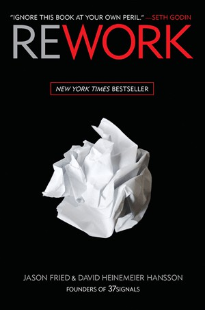

贾森·弗里德（Jason Fried）与大卫·海涅迈尔·汉森（David Heinemeier Hansson）分别是Basecamp（前身为37signals）的联合创始人与合伙人。弗里德负责产品与公司运营，汉森则是风靡全球的Ruby on Rails框架的创建者。两人长期在芝加哥和丹麦两地办公，以远程协作的方式运营着一家刻意保持小规模的软件公司。《重来》出版于2010年，是《纽约时报》畅销书，它并非一本提供详尽方法论的管理手册，而是一系列简短、直接、带有明显挑衅意味的商业观点的集合——每一则都在挑战那些在商业文化中被默认为常识的假设。
本书的核心主张可以概括为：更少即是更多。弗里德和汉森反对盲目扩张，认为大多数公司在还没有搞清楚自己真正的优势在哪里之前，就陷入了招人、融资、开会、制定战略计划的漩涡。他们倡导"做得更少，做得更好"：产品功能不必穷举，只需解决最核心的问题；会议是效率的杀手，大多数沟通用异步方式处理更有效；商业计划书是对未来的虚假把握，真正有价值的是今天能够交付的东西。这种反传统管理学的立场，使本书在2010年前后那批互联网创业者中引发了强烈共鸣。
书中对"工作狂文化"的批判尤为直接。两位作者指出，长时间工作并不等同于高效工作，疲惫的团队做出的决策质量更差，而"我们非常努力"往往是掩盖执行方向错误的借口。他们主张：雇佣真正有主见的人，然后信任他们；接受不完美的产品上线，用真实市场反馈代替内部争论；用"够用就好"（good enough）的心态快速迭代，而非在发布前追求面面俱到的完美。这种工作哲学后来被许多人与"精益创业"（Lean Startup）理念相提并论，但《重来》的风格更为直白，更少学术气，更接近两位创始人在日常运营中真实践行的方式。
《重来》的价值不在于它提供了新颖的理论框架，而在于它以一种少见的坦诚，说出了许多创业者内心已有感知却缺乏表达的直觉——创业不需要外部投资、不需要办公室、不需要复杂的组织架构，只需要解决一个真实的问题，并以可持续的方式把它做好。对于正处于早期阶段的创业者，或者在大公司内部感到官僚文化窒息的从业者，这本书是一剂简短而有力的清醒剂。